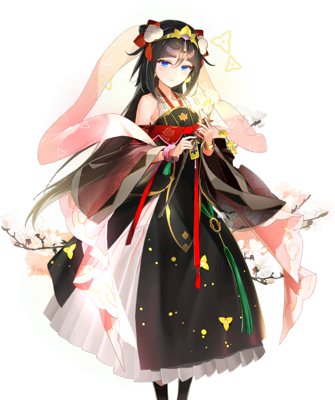

" La volonté de Sa Majesté est ma volonté, ainsi que la voie de Theranhad "
Les ancêtres de Sharun étaient des pèlerins qui ont aidé à fonder Theranhad
grâce à leur capacité à entrevoir l'avenir.
Au fil des générations, leurs capacités se sont amenuisées, mais celles-ci se révélèrent au travers de la jeune Sharun, qui s'éleva ainsi au rang de grande chamane.
Peu de temps après, l'empereur fit la rencontre d'une mystérieuse femme, et dès lors, celui-ci devint maladivement acharné à l'éradication des Yokaïs. Malgré la désapprobation de Sharun qui entrevoyait un avenir sinistre, l'empereur partit à la chasse et ne revint jamais.
Un peu plus tard, la plupart des membres de la famille impériale perdit la vie dans un mystérieux accident, et Zio, le descendant d'une lignée collatérale, monta sur le trône.
Sharun, se sentant responsable de ne pas avoir réussi à protéger l'empereur, jura de protéger le nouveau jeune empereur ainsi que Theranhand.
Au fil des générations, leurs capacités se sont amenuisées, mais celles-ci se révélèrent au travers de la jeune Sharun, qui s'éleva ainsi au rang de grande chamane.
Peu de temps après, l'empereur fit la rencontre d'une mystérieuse femme, et dès lors, celui-ci devint maladivement acharné à l'éradication des Yokaïs. Malgré la désapprobation de Sharun qui entrevoyait un avenir sinistre, l'empereur partit à la chasse et ne revint jamais.
Un peu plus tard, la plupart des membres de la famille impériale perdit la vie dans un mystérieux accident, et Zio, le descendant d'une lignée collatérale, monta sur le trône.
Sharun, se sentant responsable de ne pas avoir réussi à protéger l'empereur, jura de protéger le nouveau jeune empereur ainsi que Theranhand.
Si faible
Attaque l'ennemie avec avec 75% de chance de d'infliger venin pendant 1 tours. Si la cible subit venin après l'attaque, augmente sa recharge de compétence de 1 tour.
Ayez foi en moi
À la fin du tour de l'ennnemi, a 5% de chances pour chaques bonus de tous les ennemis d'aguemnter l'Ardeur au combat du lanceur de 20%.À la fin du tour, confère un bonus aléatoire et une barrière pendant 1 tour à l'allié à l'Attaque la plus élevée, sauf le lanceur. La force de la barrière augmente proportionnellement à la santé maximum du lanceur.
Décomposer-vous
Attaque tous les ennemis, réduisant la durée des bonus de 1 tour, avant de réduire la vitesse et d'infliger venin pendant 2 tours. Augmente l'Ardeur au combat du lanceur de 50%.Base stats
Awakened Stats
| Level | Stars | Cp | Attack | Hp | Def |
| 50 | 5 | 13780 | 393 | 3913 | 548 |
| 60 | 6 | 17197 | 490 | 4920 | 680 |
| Level | Stars | Cp | Attack | Hp | Def |
| 50 | 5 | 15694 | 513 | 4253 | 580 |
| 60 | 6 | 20045 | 640 | 5340 | 720 |